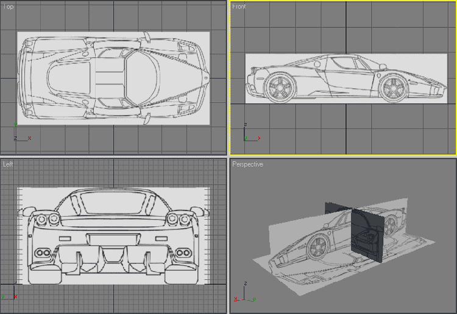

Tutorials
3DS Max: How to adjust background image in Viewport?

Hit alt+b on your keyboard to bring up the viewport background options. If you have already added an image to the background, you can check the box next to "use environment background". In the lower right, check the box marked "display background". If you want to view the image as it will be rendered, do not check the box marked, "lock Zoom/Pan"-----If you want to adjust the position of your background in the viewport and see it as it will be rendered, do the following:
1) In the material editor slot click the "get material button" (first button on the left, directly under the material slots)
2) Choose bitmap from the menu
3) Select a file and select "enviroment" in the coordinates roll out in the material editor. Choose a mapping method (usually "screen" for a simple image)
4) Hit "8" on your keyboard and drag the material from the material editor into the environment slot, choose "instance"
5) Hit "alt+b" on your keyboard and display the enviroment as displayed above.
6) Whilst viewing the required camera view in the viewport, adjust the scaling and offset of the bitmap image in the material editor. You will be able to see the image moving around in the viewport and it should give a good aproximation of how the image will render.
-edit: It is best to do this with safe frames switched on (hit "shift+f" on your keyboard.